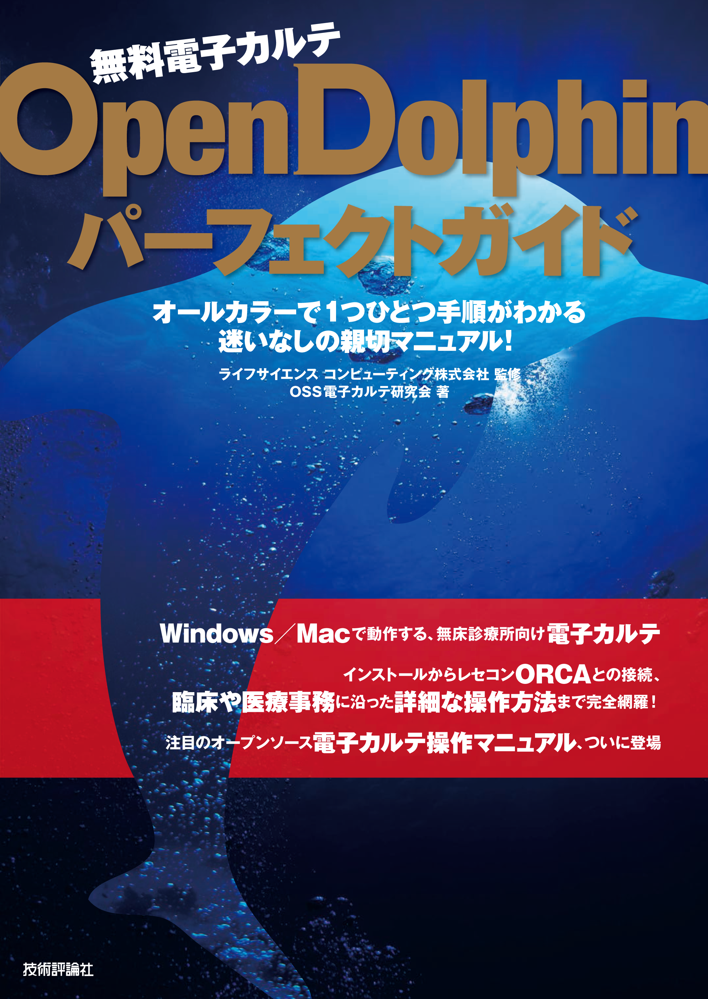
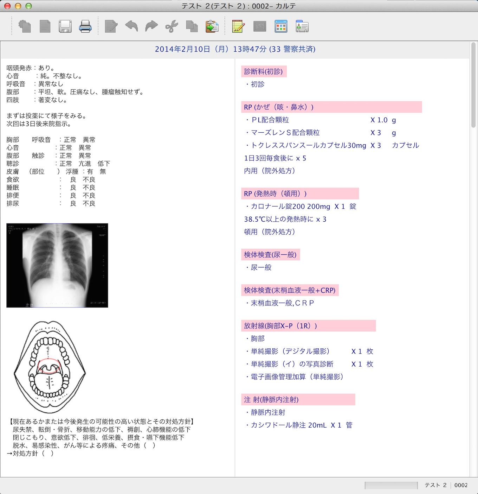

OpenDolphinはオープンソースの電子カルテです。Windows、Mac、Linux で動き、日医標準レセプトORCAと連携します。またiPhone/iPad アプリもあります。
お知らせ
2016年3月 OpenDolphin パーフェクトガイドが発売されました。お求めは技術評論社へ。
ファクト
- 札幌市元町皮ふ科 松村先生の先進的拡張 オープンドルフィン日記
- 和歌山市増田内科 増田先生の先進的拡張 OpenDolphinのカスタマイズ
- 新宿ヒロクリニック 英先生の訪問診療へ特化したカスタマイズ OpenDolphin ToGo
- 南さつま市吉井クリニック 當房さまのサーバー構築ガイド OpenDolphinをORCAサーバーに導入する
- 新見公立大学様の看護教育システムの一部にカスタマイズされています。文部科学省現代GP
- 高東ソフトウェアサービス様 OpenDolphinの開発環境、サーバーをWindowsで構築する
ファクト欄に記載のOpenDolphinについてはそれぞれの先生にお問い合わせください。OpenDolphinコミュニティにはコミッターが存在せず、GitHub等でソースを共有しています。
GitHub Gist
- OpenDolphin 海を渡る（ITmedia 記事） SlideShare
- Simpleは結果である
- 確定日について
- カルテに記載されている情報
- ORCAとの接続
- VirtualBoxでテスト
- ５分間評価
商用サポート
- 院内サーバー自己構築用の資料提供（¥200,000/年）
- クライアントのみ自己導入&従量課金制（OpenDolphin クラウド ZERO ¥50/カルテ）
- 導入一式 + 月額固定制のフルサポート（¥36,000/月）
- OEM & 共同開発
- Osirix | Xronos | 各社PACSシステムとの連携
- 検査オーダーシステムとの連携
- 在宅医療支援システムとの連携
- iOSアプリ3種（DolphinPro | VisitTouch | Super EHRTouch）
- 各地でセミナー開催
- 販売代理店様の数 全国に27
詳細についてはライフサイエンスコンピューティング（株）へお問い合わせください。
配備対応
- SSO（Single Sign On）基盤での認証
- ポータルサイトからの起動
- NTTオンデマンド VPN 網とのデータセンター間接続
- ASP化
OpenDolphinは地域連携やグループ診療等の基盤へ柔軟に配備できます。上記は福島県の健康福祉ネットワーク（通称 キビタン健康ネット）様の要件に対応したものです。
YouTube
プロフィール
- 2001年 経済産業省の公募事業に採択された案件（通称ドルフィンプロジェクト）で開発開始
- 2001年 期間中、ORCAとの接続に成功（11月1日）
- 2002年 成果報告 Sea Gaia meeting 2002＊
- 2003年 実証実験による改良 Sea Gaia meeting 2003＊
- 2004年 オープンソース化（6月15日）報告書
- 2005年 JavaEE化
- 2006年 Macintosh 対応
- 2007年 ASPサービス開始
- 2008年 コロケーションクラブ設立
- 2009年 iPhone/iPodTouch 対応
- 2010年 iPad 対応
- 2011年 日本IBMのパートナーソルーションに認定される
- 2012年 モダンホスピタルショーに初の単独出展
- 2013年 オルカとクラウド間接続が完成
- 2014年 10周年記念 OpenDolphin クラウド ZERO（従量課金制）リリース
- 2015年 国際化対応
＊報告書に記載の（株）デジタルグローブは2012年12月31日にライフサイエンスコンピューティング（株）と合併し、同社のオープンドルフィンラボとなりました。
設計方針
弊社ラボはソフトウェアを下記のように大別しています。
（１）業務用で伝票入力に適したインターフェイスを持つタイプ
（２）クリエイター用でキャンバスやノートのようなインターフェイスを持つタイプ
電子カルテの場合、診療報酬の会計や部門間連携が必要なため歴史的に１のタイプで実装されてきました。 しかしこのタイプは、医師のような知的業務を行う人が使用すると苦しく感じられます。
一方２のタイプは、入力フォームがないので思考に集中できる、読み返す時に視認性がよい、と言われます。
そこでOpenDolphinはクリエイティブ型インターフェイスを使用しながら業務システムとも連携できるようにしています。
主要機能
- ２号カルテ作成機能
- 病歴管理
- アレルギ、身長体重、患者メモの管理
- 治療履歴（処方、処置、検査、手術、処置等）表示
- 検査結果の数値及びグラフ表示
- 患者基本情報表示
- 受付リスト
- 患者検索
- 検査結果取り込み
- スタンプ＊の作製、編集
- ORCAセット入力の取り込み
- スタンプの公開とインポートによるコラボレーション
- CLAIM (ORCAとの連動)サポート
- XML出力（地域連携やオーダリングシステムへの送信機能）
- ソフトウェア自動更新
- プラグインによる機能拡張
- iPhone/iPadアプリと連携
- 複数クライアントアクセス時の排他制御
＊診療行為、医薬品、機材をセットにした診療綴りに相当するデータでORCAの点数マスタから構成される。よく使用するものをテンプレートとして作成し再利用できる。
連絡先
- 名 称 ライフサイエンスコンピューティング（株）
- 住 所 171-0022 東京都豊島区南池袋2-30-12 BITビル7F
- 電 話 03-5911-1455（本社代表 東京池袋） FAX 03-5911-1456
- E-Mail info@lscc.co.jp